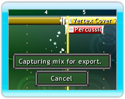
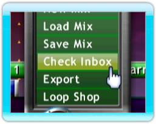

20 |
Exporteren en Delen |
 |
|

Voor het exporteren van een mix, laadt je deze in de Arranger, klik vervolgens op het Mix Menu icoon en selecteer ‘Exporteren’. Er zal gevraagd worden om jouw mix een naam te geven en jouw e-mailadres in te voeren (niet verplicht) zodat je snel een link kan ontvangen om jouw mix te downloaden.
Nadat de track op de Mix Superstar server opgeladen is, zul je ook een code ontvangen die je kunt invoeren bij www.mixsuperstar.com om jouw mix te downloaden.
Om een mix via WiiConnect24 met jouw Wii-vrienden te delen, ga naar ‘Mijn Mixes' in de geluidsfragment Browser. Selecteer de mix die je wilt delen, druk op de B-knop en selecteer ‘Delen'. Je kunt maximaal 8 vrienden selecteren om in een enkele keer de mix mee te delen. Nadat je jouw selecties gemaakt hebt, druk je op ‘Versturen'. Als er nog een andere mix of samples in jouw mix zitten die je opgenomen hebt, zul je deze apart moeten versturen.
Het Mix Menu icoon zal knipperen wanneer je een gedeelde mix van een Wii-vriend ontvangt. Selecteer het icoon en druk op de ‘Inbox Controleren' optie. In dit menu kan je mixes importeren door het bestand dat je wilt importeren te selecteren, en vervolgens de ‘Importeren' knop aan de rechterkant in te drukken. Nadat je een bestand geïmporteerd hebt, zal het uit de inbox verwijderd worden en in de ‘Mijn Mixes' sectie in de browser geplaatst worden.
Let op: Alhoewel alle Wii-vrienden weergegeven zullen worden, zullen alleen die Wii-vrienden die Mix Superstar op hun Wii-systeem gedownload hebben via deze service muziek kunnen uitwisselen. We raden aan om jouw vriend van tevoren een bericht te sturen om te bevestigen dat ze Mix Superstar gedownload hebben. |
 |
 |
 |